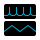

6.2. Power Profiler¶
The purpose of the ‘Power Profiler’ is to plot the current (and associated charge) drawn by the battery on the chip in real time over USB.
Note
The default view shown is Current(1)/Charge
{kind=link}
Figure 125 Power Profiler run snapshot
6.2.1. Power Profiler Ribbon group¶
Power profiler is of the most important Toolbox tools. SmartSnippets™ Toolbox provides a special group of functions on ribbon for this tool. The Power Profiler ribbon group opens automatically when Power Profiler tool is selected.
| Icon | Description |
|---|---|
| Exports Power Profiler data to CSV format | |
| Imports data on Power Profiler from CSV file | |
| Clears the secondary current data and hides it from the chart view | |
| Clears the primary current data and hides it from the chart view | |
| Takes an image snapshot of the Power Profiler chart window in .png format | |
| Opens configuration dialog | |
| Calibrates offset(s) and updates the offset value(s) used in the Current calculations. |
Data export / import for Power Measurement Module version 2 (PMM2):
In case of PMM2 user has the option to export data from multiple charts at once. When export is selected the list of charts that contain data captured the last time the start button was pressed is presented (doesn’t matter if the charts are currently visible) and user can select the data of which charts to be exported. Charge chart data are not exported since the charge values are estimated from the respective Ch1/Ch2 Current values. The data are saved in a different csv file per chart and all of them are zipped and saved to the zip file name user has provided. During import user can select either a single csv file to import data at a specific chart or a zip file that has been previously exported from Power Profiler or a folder containing csv files, that has been created by unzipping a zip file exported by Power Profiler tool. The data are loaded in the respective charts and and if the chart is not visible at the moment it becomes visible to present the loaded data.
Power Profiler ribbon for Power Measurement Module version 1 (PMM1) includes also the following buttons under Chart View group:
| Icon | Description |
|---|---|
| Shows View (Current 1 / Charge) | |
|  | Shows View (Current 1 / Current 2) |
| Shows View (Current 2 / Charge) |
Every chart window supports the following plot types:
Current auto scale: On the chart are plotted the current data following the scale which is determined by the minimum and the maximum values of the current.
Current custom scale: On the chart are plotted the current data following the scale which is determined by user defined minimum and maximum values in the configuration dialog under the ‘Custom Scaling of Current Axis’.
Charge: On the chart are plotted the calculated charge values.
If a PMM1 is detected, user can switch between the available view modes by pressing the corresponding toolbar buttons.
Note that charts Current 1 and Current 2 plot the same data but may present them in a different scale. This can be achieved by selecting different axis minimum & maximum values in Config Dialog > Chart Settings > Axis.
Power Profiler ribbon for PMM2 includes also the following buttons:
| Icon | Description |
|---|---|
| Resets the docking frames layout of the charts (position, size, visible charts) to the default. |
PMM2 ribbon includes also the following ribbon groups:
- Operation Mode: User can switch to Hibernation Mode in order to measure hibernation current. Hibernation mode measures Ch1 (Low) Current. A low pass filter can be applied to the measured values to reduce the noise. The low pass filter can be used only on hibernation mode. When user switches to hibernation mode, a popup will prompt user to automatically calibrate the offset first. This step is optional: If user has already calibrated the offset, calibration can be skipped. The same combo box can be used to exit the hibernation mode, by selecting the Normal mode.
- Chart View: User can control the set of visible charts by clicking or unclicking the respective check boxes. For inputs 2 and 3, which represent channels 2 and 3 respectively, user can enable either the Current or the Voltage graph. By clicking the first check box next to CH2 / CH3 user can enable the Current chart and by clicking the second check box user can enable the Voltage chart. The first combo box includes the input signals for the Current chart while the second combo box includes the input signals for the Voltage chart. The set of visible charts and the input signals for channels 2 and 3 are saved in the project file and loaded again the next time the same project is used.
- Digital Signals: User can control here the set of digital signals that are visible in the digital chart. Also by clicking on the signal name user can change its name. The new name should be unique. Both the set of the visible signals and their names are saved in the project file and loaded again the next time the same project is used. The button resets the signal names to the default signal names per family.
6.2.3. Power Profile basic usage¶
User can initiate the data capturing process using the buttons under the Control tab located on the right side of the Power Profiler tool. The following steps can be followed:
- Make sure an application is already running so that meaningful data instead of noise if captured by Power Profiler.
- Switch to the Power Profiler tool by clicking toolbar’s Power Profiler tool under the Monitor group.
- Press the Initialize button and then the Start button from the Power Profiler Control tab in order to start the data capturing process.
The Power Profiler should have now started capturing data and should be looking similar to the following picture:
{kind=link}
Figure 126 Power Profiler while capturing data
While capturing data:
- The ‘Peak Current (mA)’, the ‘Average Current (mA)’ and the ‘Charge (uC)’ values of the info panel are updated. In case of PMM2 the average low and high currents are also updated.
- The info panel also shows the ‘Sleep Mode’ of the current measurement: it can be either in ‘Deep Sleep’ or in ‘Extended Sleep’ mode (the mode is configurable through the configuration page, see below). While in sleep mode, Power Profiler still calculates the power dissipation during this period of inactivity by assuming a 550nA consumption while in Deep Sleep and a 1.2uA consumption while in Extended Sleep mode. This significantly improves the ‘Average Current (mA)’ measurement since it takes into account the power consumption for the entire period of time.
- The plot area is updated as new data is captured.
- It is recommended to use the zoom in/zoom out controls (and the other controls mentioned below) to adjust the plot viewport in a way that helps user understand what the running application is doing and identify the different patterns. Depending on how the application works, and after applying the proper zooming, user should be able to identify the mode that the application is on such as idle, sleep, receiving, transmitting, advertising etc. The following figure shows the same signal as before but after having zoomed in appropriately:
{kind=link}
Figure 127 Capturing data with proper zooming
To stop capturing measurements with the Power Profiler:
- If auto stop mode is disabled, the process will run indefinitely.
- If auto stop mode is enabled, after collecting a specific number of data samples, the data capturing process is terminated.
- By pressing the Stop button from the Power Profiler Control tab, user can terminate the process at any given time.
6.2.4. Power Profiler software cursors¶
User has the ability to insert a vertical cursor in the Power Profiler display (SW cursor) by toggling a specific GPIO in the SW running on the ARM Cortex M0 CPU. Instructions on how to implement this are described in detail in the document AN-B-055, Renesas.
The SW cursor provides an accurate correlation between the SW and the Power profile of the system in real time. The vertical line is not movable on the display window.
{kind=link}
Figure 128 Software cursors
6.2.5. Power Profiler control panel¶
Threshold (mA): If ‘Auto Trigger’ is checked and start button is pressed, the data capturing process starts when signal exceeds the threshold value.
Time Interval (ms): If ‘Auto Stop’ is checked and data capturing is in progress, the process stops automatically after ‘Time Interval’ ms.
6.2.6. Power Profiler Chart Controls¶
The Tools tab, that is located on the right side of the Power Profiler tool, provides tools to control the charts. User can work in any of the following tool modes under Tools tab:
 Select/Move: Selection mode (standard). In this mode a cursor allows selecting ‘Time Marker’ objects in the chart. If Del key is pressed the selected ‘Time Marker’ gets deleted.
Select/Move: Selection mode (standard). In this mode a cursor allows selecting ‘Time Marker’ objects in the chart. If Del key is pressed the selected ‘Time Marker’ gets deleted.
 Measure: In this mode a cursor allows showing distances of time, current and charge between two points of the chart window. While in this mode, if user presses any mouse button and moves the cursor, a line connecting these two points is drawn. The distance between the points is highlighted to the right of the second point of the line. It looks like ‘dt: [distance of time between two points] ms / dI: [distance of current between two points] mA’. If left mouse is pressed for a second time, the cursor is free to start a new measurement. Cursor can be switched to Select mode by pressing the Esc button.
Measure: In this mode a cursor allows showing distances of time, current and charge between two points of the chart window. While in this mode, if user presses any mouse button and moves the cursor, a line connecting these two points is drawn. The distance between the points is highlighted to the right of the second point of the line. It looks like ‘dt: [distance of time between two points] ms / dI: [distance of current between two points] mA’. If left mouse is pressed for a second time, the cursor is free to start a new measurement. Cursor can be switched to Select mode by pressing the Esc button.
Add Time Marker: In this mode a cursor allows adding a new Timemarker when any mouse button is pressed.
6.2.7. Chart management via mouse¶
- Timemarker scrolling: while in Select mode, by clicking on any point of a Timemarker with the left mouse, holding the button pressed and then horizontally moving the cursor
- Chart scrolling: while in Select mode, by clicking on any point in the chart window, holding the button pressed and then horizontally moving the cursor
- Zoom In/Out: while in any mode, by moving the mouse wheel over the chart window
- Moving imported data: while in Select mode, user may select the secondary (imported) data by left clicking on the respective plot line and drag them on the horizontal axis. The plot line can be dragged when the cursor appears on it. This may be helpful in order to synchronize secondary with primary data and compare patterns that appear in both plots.
6.2.8. Chart management via keyboard¶
The user can manage the Power Profiler via the keyboard. To do so, the cursor should be above the Power Profiler graphs.
- Plus(+): zoom in
- Minus(-): zoom out
- Home: shift chart till the last bar
- End: shift chart till the first bar
- Page Up: shift chart in time axis by size of one window backwards
- Page Down: shift chart in time axis by size of one window forward
- Left Cursor: shift chart in time axis by size of 5% window backwards
- Right Cursor: shift chart in time axis by size of 5% window forward
- Del: Delete the selected Time Marker
- F12: Takes an image snapshot of chart window in png format. The path where snapshots are saved can be specified in the Config dialog > Chart Settings > Snapshot File Path.
6.2.9. Power Profiler configuration¶
By pressing the ‘Config’ button from the Power Profiler ribbon group, the Power Profiler configuration dialog shows up:
{kind=link}
Figure 129 Configuration HW Settings
6.2.9.1. H/W Settings¶
- Voltage (V):The voltage to be used for the charge and energy calculations. Possible range is 1.8 to 4.3V. The default setting is 3.0V
- Calibration offset (mA):Determines the offset value while converting captured values to current (in mA) values. See below the ‘Calibration Procedure’ section for more details. If a PMM2 has been detected, calibration offsets for both channel 1 and channel 2 will be presented at this tab.
- Multiplication factor: Determines the multiplier value while converting captured values to current (in mA) values. Default value is 100. For DA1468x chips consult the following Table 5
| DA1468x motherboard revision | Multiplication factor |
|---|---|
| revC | 50 |
| revD | 100 |
| revE | 100 |
- Samples for SW cursor: How many zero samples to collect before adding a S/W cursor to the chart.
- SW Cursor tolerance (uA): The upper threshold under which samples are considered to be equal to zero. Related to S/W cursors and the fact that although we expect to measure 0uA during a S/W cursor, in reality we measure values that are usually lower than 5uA.
- SW Cursors to Stop: How many SW cursors to add to the chart before stopping data capture. Data capture is stopped with a time offset of 100 ms.
- Time offset of SW Cursor (ms): Correction time offset of SW cursors.
- Auto trigger threshold (mA): Determines the initial value of ‘Threshold’ textbox on control panel
- Auto stop sampling time (ms): Determines the initial value of ‘Time Interval’ textbox on control panel
- Pre trigger sampling time (ms): The amount of captured data (in ms), just before the start of data capturing process
- Max allowed sampling time (ms): The maximum allowed sampling time during the data capturing process
- Sample Rate: The number of data samples collected from the board.
- Sleep Mode: Determines whether the measurement is done while in Extended or Deep sleep mode
- Sleep Mode Threshold (uA): The upper threshold under which measured values are considered equal to the standard current dissipation for that mode (1.2uA if in ‘Extended Sleep’ and 0.55uA if in ‘Deep Sleep’ mode)
- Sleep Mode Extended (uA): Current dissipation taking count when Sleep Mode Extended selected.
- Sleep Mode Deep (uA): Current dissipation taking count when Sleep Mode Deep selected.
- CSV File path: Export/Import destination for csv files
- Enable UART protocol parser: Open UART and wait for commands. This feature is not yet fully implemented.
{kind=link}
Figure 130 Configuration Chart Settings
6.2.9.2. Chart Settings¶
- Show current value when mouse on graph: If checked, a tooltip shows the time and current value when the mouse is over the waveform
- Create event markers on max sample values: If checked, a marker is created on maximum current value
- Enable Level Of Detail process (LOD): If checked, Power Profiler will compute a multilevel approximation of waveform.
- Max Number of Samples To Draw: it allows to control the plot quality by determining the maximum number of samples to draw during downsampling
- Snapshot File Path: Save destination folder for snapshot .png files.
- Custom scaling of Current Axis: User defined current axis range to be used by the corresponding plot type.
6.2.9.3. Trigger Functions¶
Note
Trigger Functions tab is available only for PMM2.
{kind=link}
Figure 131 Trigger Function with single trigger that starts data capture
{kind=link}
Figure 132 Trigger Function with single trigger that stops data capture

Figure 133 Trigger Functions with combination of triggers that stop data capture
The Trigger functions tab may be used to specify conditions under which data capturing will be started or stopped. The conditions refer to changes on specific triggers that are presented on the digital chart. Two types of conditions are available: A trigger rises x times or a trigger falls x times. On the top of the dialog, as indicated in Figure 131, Figure 132 and Figure 133, user is able to create a new rule to be added to the table of rules / trigger functions. The trigger function can either start the data capture when satisfied or stop it.
{kind=link}
Figure 134 Chart that fulfills trigger function of figure Figure 131
{kind=link}
Figure 135 Log message when function of figure Figure 131 is triggered.
- Start Trigger Function: When one or more start trigger functions have been added to the triggers’ table, no data is presented on the charts until one of the start trigger functions is executed. In the meanwhile stop trigger rules are not checked. The first start trigger rule to be satisfied triggers data collection, presentation and a time marker to be added on the chart. The rest of the start rules are ingored at this point and only stop trigger rules, if any, are checked. Note that there is another way to conditionally trigger data capture start. User may check the Auto Trigger checkbox in the Control panel of Power Profiler tool and specify a threshold current above which values will be collected. When Auto Trigger has been selected and also start trigger functions have been specified, start trigger functions are the ones that are checked in order to start data capture. In order to use the Auto Trigger functionality, the user should not define any start trigger functions.
- Stop Trigger Function: The first stop rule / trigger function that will be satisfied among them will cause data capture to be stopped and a cursor to be added to the chart which indicates the time at which the rule was satisfied. As mentioned before, when start trigger functions have also been satisfied, first a start trigger function may be executed and then Toolbox starts checking the stop trigger functions.
There are two types of trigger functions that can be created for both start and stop trigger functions:
- Single Trigger Function: Select whether the trigger function should start or stop the data capture when it is satisfied from the respective radio buttons on the top of the dialog. Then Select from the triggers combo box the name of the trigger for this rule and from the state combo box either the Rises or the Falls state. In the times field the number of times that this trigger is expected to rise or fall is added. In the last combo box the dash (-) is selected to indicate that this is a single trigger rule. In case a stop trigger function has been specified, the user may also optionally add a delay after which data capturing will stop once the rule is satisfied. By pressing the Add button the rule is added to the table. See on figure Figure 136 the result of trigger function of figure Figure 132. Figure 137 indicates the log message when the trigger function is executed.
{kind=link}
Figure 136 Chart that fulfills trigger function of figure Figure 132
{kind=link}
Figure 137 Log message when function of figure Figure 132 is triggered.
- Trigger Combination Function: When user selects AND at the last combo box of a single trigger rule, a second line is added and is able to combine another trigger with the first one. The rule is satisfied when both parts of the rule are satisfied. A rule combining two triggers may be either Asynchronous or Synchronous. Asynchronous means that the first part and the second part of the rule can be satisfied at any time, e.g. the first part at the beginning of the data capture and the second part 2000 ms later. Synchronous means that both parts should be satisfied almost at the same time. For example let’s suppose we have a rule stating that when TRIG0 rises 2 times and TRIG1 rises 3 times data capture should stop after 10 ms. When TRIG0 rises for the second time TRIG1 should also rise for the third time in order for the rule to be satisfied. Since we are capturing thousands of data per millisecond it is very difficult for both parts of the rule to be satisfied on exactly the same time. That’s why the Detection Window has been introduced. Enter a value in milliseconds to the detection window during which, if both parts of the rule are satisfied, the synchronous rule is also satisfied. Default value is 10 ms. The detection window starts the count down when either part of the rule is satisfied and when it is over we consider the rule as failed if the other part has not been satisfied yet. The following images indicate what happens when the combined trigger function of figure Figure 133 is executed:
{kind=link}
Figure 138 Chart that fulfills combination triggers of figure Figure 133
{kind=link}
Figure 139 Log message when function of figure Figure 133 is triggered.
- A time marker is added at the time where the trigger rule was satisfied. At the example presented here the time marker has been added at the moment TRIG1 rises for the 2rd time, where the second part of the trigger rule is also satisfied (the first part was already satisfied).
- The description of the trigger rule which caused data capturing to stop is added to the log in green font.
- Data capturing stops after the delay time, if any, that has been specified in the rule. Even if this delay is 0, we will see some more data after the trigger execution time marker because the buffered data we have already read from the device will be presented.
User may select select one or more table rows by pressing the left Ctrl button and clicking on the rows of interest and delete them by pressing the Delete Selected button. By pressing the Delete All button the whole table is cleared. In order for the rules to be saved, applied on the next data capture and loaded again the next time the configuration dialog opens, press the Apply button. The trigger functions are also saved to the project file when the application exits and will be available again the next time Toolbox is launched using the same project.
6.2.10. Calibration Procedure¶
In order to find the appropriate value for the Calibration Offset (mA) configuration setting in case of PMM1 or the CH1 Calibration Offset (A) and CH2 Calibration Offset (A) in case of PMM2, the following procedure can be followed:
6.2.10.1. PMM1 Calibration Procedure¶
By default, Power Profiler prefills the Calibration offset (mA) configuration setting with value -0.01724mA for PMM1, which is a good approximation for the default 3.0V supply voltage.
If the supply voltage is different, or more accurate measurements are required, the following steps can be followed in order to remove any added load introduced by the main board (motherboard):
- Connect the motherboard to the PC.
- Remove the daughter board so that it does not dissipate any power. Alternatively, if applicable, power off the daughterboard via the daughterboard power switch (the motherboard should still be powered on).
- Press the initialize button from the Control toolbar of Power Profiler tool in order to detect the PMM version.
- Press the Offset Calibration button from the Controls group of the ribbon. Data will be collected for about 10 seconds and then data capturing will automatically stop.
- Check the value displayed on the Avg Current (mA) field. This is the current introduced by the motherboard that we would like to subtract from subsequent measurements.
- Avg Current (mA) value is multiplied with -1 and then set to the Calibration offset (mA) field of the Power Profiler configuration dialog after the calibration procedure. Since for PMM1 we are adding the offset to the received current value, a negative offset is expected and therefore we multiply the average current by -1.
- Connect (or alternatively switch on) the daughter board and follow the normal procedure for taking measurements.
- The value set in the configuration dialog for the offset will be saved in the project so that user does not have to follow the same procedure next time Toolbox is used with the same project.
The following image explain the procedure described above:
{kind=link}
Figure 140 Note the ‘Avg Current (mA)’ value

Figure 141 Calibration offset value updated after the calibration procedure
When the daughter board is removed from the DA14531 PRO motherboard during calibration the power to the SPI flash must also be disconnected by removing the jumper connecting pins 1 and 2 on J1. If this is not done then the calibration current is about 1.5-2mA (the flash must be drawing this as its CS pin is left floating due to the daughter board being disconnected).
6.2.10.2. PMM2 Calibration Procedure¶
By default, Power Profiler prefills the CH1 Calibration Offset (A) configuration setting with value 0.0000189 Ampere and the CH2 Calibration Offset (A) configuration setting with value -0.0005 Ampere, which is a good approximation for the default 3.0V supply voltage. CH1 Calibration Offset represents the offset used in the calculation of the Low Current, originating from channel 1 and CH2 Calibration Offset represents the offset used in the calculation of the High Current, originating from channel 2.
If the supply voltage is different, or more accurate measurements are required, the following steps can be followed in order to remove any added load introduced by the main board (motherboard):
- Connect the motherboard to the PC.
- Remove the daughter board so that it does not dissipate any power. Alternatively, if applicable, power off the daughterboard via the daughterboard power switch (the motherboard should still be powered on).
- Press the initialize button from the Control toolbar of Power Profiler tool in order to detect the PMM2.
- Press the Offset Calibration button from the Controls group of the ribbon. Data will be collected for about 10 seconds and then data capturing will automatically stop.
- Check the values displayed on the Avg CH1 (Low) Current (A) and Avg CH2 (High) Current (A) fields. These are the current values introduced by the motherboard on each of the channels, that we would like to subtract from subsequent measurements.
- Avg CH1 (Low) Current (A) value is automatically set to the CH1 Calibration offset (A) field and Avg CH2 (High) Current (A) value is automatically set to the CH2 Calibration offset (A) of the Power Profiler configuration dialog. Note that for PMM2 the offset values are subsrtacted from the measurements while data are captured, so there is no need to multiply the values by -1 like we do for PMM1.
- Connect (or alternatively switch on) the daughter board and follow the normal procedure for taking measurements.
- Values set in the configuration dialog for Channel 1 and Channel 2 offsets will be saved in the project so that user does not have to follow the same procedure next time Toolbox is used with the same project.
{kind=link}
Figure 142 Note the ‘CH1 Avg Current (A)’ and ‘CH2 Avg Current (A)’ values
{kind=link}
Figure 143 Calibration offset values for Channel 1 and Channel 2 are updated after the calibration procedure
6.2.11. Power Profiler special properties¶
Power Profiler Transfer Size property: User can change the transfer size for USB IN and OUT requests. Transfer size is especially critical when running SmartSnippets™ Toolbox on Linux OS over a virtual machine environment. The default size used is 16000 bytes and acceptable values are multiples of 64 bytes between 64 bytes and 64k bytes. In order to override the default value, set the POWER_PROFILER_TRANSFER_SIZE property in properties.txt file.
POWER_PROFILER_TRANSFER_SIZE=65536
Location of properties.txt file is in user’s home directory under SmartSnippetsToolbox folder. e.g.
C:\Users\<user>\SmartSnippetsToolbox\properties.txtThe default value has been tested and proved to be the maximum transfer size that ensures stable performance of Power Profile when running on Linux OS over a virtual machine environment.
Use of older motherboard for DA14585-6, DA14531. When using older motherboards marked as P_VC the following property should be set in the forementioned properties.txt file to get more accurate results from Power Profiler tool.
USE_PV_C_BOARD=true